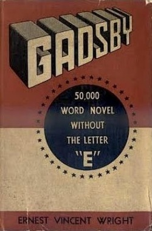

Not to be confused with The Great Gatsby.
Gadsby is a 1939 novel by Ernest Vincent Wright which does not include any words that contain the letter E, the most common letter in English. A work that deliberately avoids certain letters is known as a lipogram. The plot revolves around the dying fictional city of Branton Hills, which is revitalized as a result of the efforts of protagonist John Gadsby and a youth organizer.
Though vanity published and little noticed in its time, the book has since become a favorite of fans of constrained writing and is a sought-after rarity among some book collectors. Later editions of the book have sometimes carried the alternative subtitle 50,000 Word Novel Without the Letter "E".
Despite Wright's claim, published versions of the book may contain a handful of uses of the letter "e". The 1939 first edition, for example, contains "the" three times and "officers" once.
